1VD-FTV VANE PUMP > REASSEMBLY |
| 1. INSTALL VANE PUMP HOUSING OIL SEAL |
Coat the lip of a new oil seal with power steering fluid.
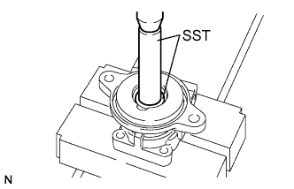 |
Using SST and a press, press in the oil seal.
| 2. INSTALL VANE PUMP SHAFT BEARING |
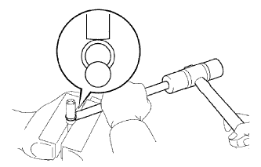 |
Using a brass bar and hammer, tap on a new snap ring.
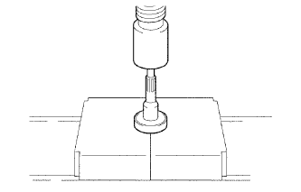 |
Using a press, press in the shaft into the bearing.
| 3. INSTALL VANE PUMP SHAFT WITH VANE PUMP SHAFT BEARING |
Temporarily install the rear housing to the front housing.
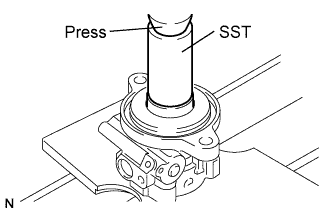 |
Using SST and a press, press in the shaft with bearing into the front housing.
Using a screwdriver, install a new snap ring into the front housing.
| 4. INSTALL VANE PUMP GEAR |
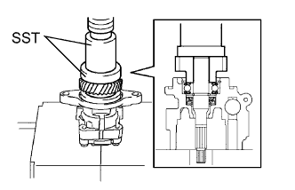 |
Using SST and a press, press in the gear to the shaft.
Remove the rear housing from the front housing.
| 5. INSTALL VANE PUMP FRONT SIDE PLATE |
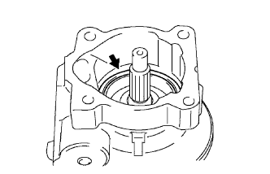 |
Coat a new O-ring with power steering fluid and install it into the front housing.
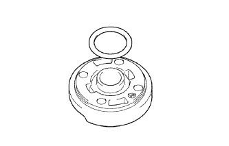 |
Coat a new O-ring with power steering fluid and install it onto the front side plate.
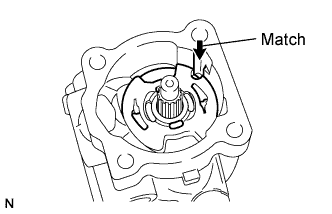 |
Align the notch of the front side plate with the notch of the front housing, and install the front side plate.
| 6. INSTALL VANE PUMP CAM RING |
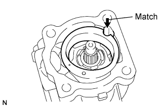 |
Align the notch of the cam ring with the notch of the front side plate, and install the cam ring with the inscribed mark facing upward.
| 7. INSTALL VANE PUMP ROTOR AND VANE PUMP PLATE |
Install the rotor with the inscribed mark facing upward.
Coat the 10 vane pump plates with power steering fluid.
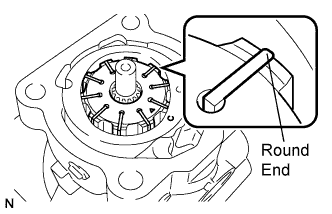 |
Install the 10 vane pump plates with the round end facing upward.
| 8. INSTALL REAR VANE PUMP HOUSING |
Coat a new O-ring with power steering fluid and install it onto the rear housing.
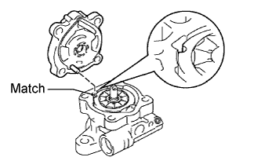 |
Align the straight pin of the rear housing with the notches of the cam ring, front side plate and front housing.
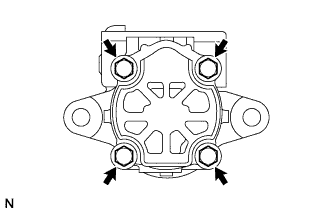 |
Install the rear housing with the 4 bolts.
| 9. INSTALL FLOW CONTROL VALVE |
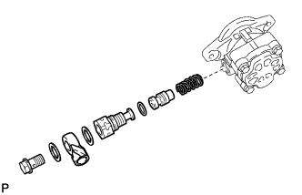 |
Coat the flow control valve with power steering fluid.
Install the compression spring and flow control valve to the front housing.
Coat a new O-ring with power steering fluid and install it onto the pressure port union.
Install the pressure port union to the front housing.
Install the pressure feed union with the bolt to the pressure port union.
| 10. INSTALL POWER STEERING SUCTION PORT UNION |
Coat a new O-ring with power steering fluid and install it to the suction port union.
Install the suction port union to the vane pump with the bolt.
| 11. INSPECT TOTAL PRELOAD |
Check that the pump rotates smoothly without abnormal noise.
Temporarily install a service bolt.
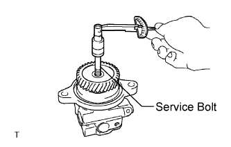 |
Using a torque wrench, measure the pump rotating torque.